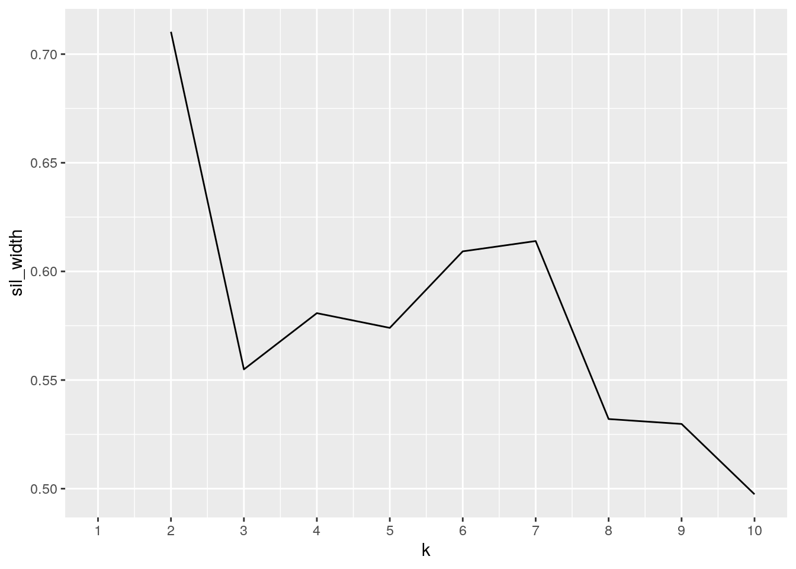

For this project I used two datasets. The first dataset I found is called “USArrests”, which I found in the “datasets” package in R and contains data on violent crimes. This dataset contains 50 observations for 4 variables by the 50 US states. The first variable in this datasest is “Murder”“, which is measured by murder arrests per 100,000 people. The second variable in this dataset is”Assault“, which is measured by assault arrests per 100,000 people. The third variable is”UrbanPop“, which is the percent of the population that is an urban popualtion. The fourth variable is”Rape“, which is measured by rape arrests per 100,000 people. The second dataset that is used for this project is called”States“, which I found in the”carData" package in R and contains data on education and related statistics for each of the 50 states. The first variable is “region”, which contains the US census regions. The regions are East North Central (ENC), East South Central (ESC), Mid-Atlantic (MA), Mountain (MTN), New England (NE), Pacific (PAC), South Atlantic (SA), West North Central (WNC), and West South Central (WSC). The second variable is “pop”, which measures population in 1000s. The third variable is “SATV”, which is the average scores for high school students on the verbal component of the Scholatic Aptitude Test. The fourth variable is “SATM”, which is the average scores for high school students on the math component of the Scholatic Aptitude Test. The fifth variable in the dataset is “percent”, which is the percentage of graduating high school students in the state who took the SAT exam. The sixth variable is “dollars”, which is state spending on education in $1000s per student. The seventh variable is “pay”, which is the average teacher’s salary in the state in $1000s.
I found these data sets interesting because I was curious if there was any correlation between violent crime and education spending. I expected that in states where there was less money spent on education, there would be more occurences of violent crime.
library(dplyr)
library(tidyverse)
States_ <- read_csv("States_.csv")
USArrests_ <- read_csv("USArrests.csv")
States_untidy <- States_ %>% pivot_longer(cols = c("SATV", "SATM"),
names_to = "SAT", values_to = "score")My datasets were already tidy, so I used “pivot_longer” to untidy my datasets. I combined “SATV” and “SATM” into one column even.
fulldata <- USArrests_ %>% full_join(States_untidy, by = c(State = "state"))I performed a full join on my datasets because I didn’t want to lose any variables. Since there was a difference in capitalization between the USArrests dataset and the States dataset, I had to define that State=state so that the datasets could be joined.
fulldata <- fulldata %>% pivot_wider(names_from = "SAT", values_from = "score")I used the “pivot_wider” function to re-tidy my dataset. I separated SATV and SATM into two separate columns again since they should be displayed as two distinct variables.
fulldata %>% filter(region == "MTN", Murder >= 10)## # A tibble: 2 x 12
## State Murder Assault UrbanPop Rape region pop percent dollars pay SATV
## <chr> <dbl> <dbl> <dbl> <dbl> <chr> <dbl> <dbl> <dbl> <dbl> <dbl>
## 1 Neva… 12.2 252 81 46 MTN 1202 24 4.56 32 434
## 2 New … 11.4 285 70 32.1 MTN 1515 12 4.45 26 480
## # … with 1 more variable: SATM <dbl>fulldata <- fulldata %>% mutate(avg_crime = (Murder + Rape +
Assault)/3)fulldata %>% select(State, Murder, Assault, Rape, avg_crime,
everything())## # A tibble: 50 x 13
## State Murder Assault Rape avg_crime UrbanPop region pop percent dollars
## <chr> <dbl> <dbl> <dbl> <dbl> <dbl> <chr> <dbl> <dbl> <dbl>
## 1 Alab… 13.2 236 21.2 90.1 58 ESC 4041 8 3.65
## 2 Alas… 10 263 44.5 106. 48 PAC 550 42 7.89
## 3 Ariz… 8.1 294 31 111. 80 MTN 3665 25 4.23
## 4 Arka… 8.8 190 19.5 72.8 50 WSC 2351 6 3.33
## 5 Cali… 9 276 40.6 109. 91 PAC 29760 45 4.83
## 6 Colo… 7.9 204 38.7 83.5 78 MTN 3294 28 4.81
## 7 Conn… 3.3 110 11.1 41.5 77 NE 3287 74 7.91
## 8 Dela… 5.9 238 15.8 86.6 72 SA 666 58 6.02
## 9 Flor… 15.4 335 31.9 127. 80 SA 12938 44 5.15
## 10 Geor… 17.4 211 25.8 84.7 60 SA 6478 57 4.86
## # … with 40 more rows, and 3 more variables: pay <dbl>, SATV <dbl>, SATM <dbl>fulldata %>% arrange(desc(avg_crime))## # A tibble: 50 x 13
## State Murder Assault UrbanPop Rape region pop percent dollars pay SATV
## <chr> <dbl> <dbl> <dbl> <dbl> <chr> <dbl> <dbl> <dbl> <dbl> <dbl>
## 1 Flor… 15.4 335 80 31.9 SA 12938 44 5.15 30 418
## 2 Nort… 13 337 45 16.1 SA 6629 55 4.80 29 401
## 3 Mary… 11.3 300 67 27.8 SA 4781 59 6.18 38 430
## 4 Ariz… 8.1 294 80 31 MTN 3665 25 4.23 30 445
## 5 New … 11.4 285 70 32.1 MTN 1515 12 4.45 26 480
## 6 Cali… 9 276 91 40.6 PAC 29760 45 4.83 39 419
## 7 Alas… 10 263 48 44.5 PAC 550 42 7.89 43 438
## 8 Sout… 14.4 279 48 22.5 SA 3487 54 4.33 28 397
## 9 Neva… 12.2 252 81 46 MTN 1202 24 4.56 32 434
## 10 Mich… 12.1 255 74 35.1 ENC 9295 12 5.26 38 454
## # … with 40 more rows, and 2 more variables: SATM <dbl>, avg_crime <dbl>fulldata %>% arrange(desc(Rape))## # A tibble: 50 x 13
## State Murder Assault UrbanPop Rape region pop percent dollars pay SATV
## <chr> <dbl> <dbl> <dbl> <dbl> <chr> <dbl> <dbl> <dbl> <dbl> <dbl>
## 1 Neva… 12.2 252 81 46 MTN 1202 24 4.56 32 434
## 2 Alas… 10 263 48 44.5 PAC 550 42 7.89 43 438
## 3 Cali… 9 276 91 40.6 PAC 29760 45 4.83 39 419
## 4 Colo… 7.9 204 78 38.7 MTN 3294 28 4.81 31 456
## 5 Mich… 12.1 255 74 35.1 ENC 9295 12 5.26 38 454
## 6 New … 11.4 285 70 32.1 MTN 1515 12 4.45 26 480
## 7 Flor… 15.4 335 80 31.9 SA 12938 44 5.15 30 418
## 8 Ariz… 8.1 294 80 31 MTN 3665 25 4.23 30 445
## 9 Oreg… 4.9 159 67 29.3 PAC 2842 49 5.29 32 439
## 10 Miss… 9 178 70 28.2 WNC 5117 12 4.42 28 473
## # … with 40 more rows, and 2 more variables: SATM <dbl>, avg_crime <dbl>fulldata %>% arrange(desc(Murder))## # A tibble: 50 x 13
## State Murder Assault UrbanPop Rape region pop percent dollars pay SATV
## <chr> <dbl> <dbl> <dbl> <dbl> <chr> <dbl> <dbl> <dbl> <dbl> <dbl>
## 1 Geor… 17.4 211 60 25.8 SA 6478 57 4.86 29 401
## 2 Miss… 16.1 259 44 17.1 ESC 2573 4 3.32 24 477
## 3 Flor… 15.4 335 80 31.9 SA 12938 44 5.15 30 418
## 4 Loui… 15.4 249 66 22.2 WSC 4220 9 4.01 26 476
## 5 Sout… 14.4 279 48 22.5 SA 3487 54 4.33 28 397
## 6 Alab… 13.2 236 58 21.2 ESC 4041 8 3.65 27 470
## 7 Tenn… 13.2 188 59 26.9 ESC 4877 12 3.71 28 483
## 8 Nort… 13 337 45 16.1 SA 6629 55 4.80 29 401
## 9 Texas 12.7 201 80 25.5 WSC 16987 42 4.24 28 413
## 10 Neva… 12.2 252 81 46 MTN 1202 24 4.56 32 434
## # … with 40 more rows, and 2 more variables: SATM <dbl>, avg_crime <dbl>fulldata %>% arrange(desc(Assault))## # A tibble: 50 x 13
## State Murder Assault UrbanPop Rape region pop percent dollars pay SATV
## <chr> <dbl> <dbl> <dbl> <dbl> <chr> <dbl> <dbl> <dbl> <dbl> <dbl>
## 1 Nort… 13 337 45 16.1 SA 6629 55 4.80 29 401
## 2 Flor… 15.4 335 80 31.9 SA 12938 44 5.15 30 418
## 3 Mary… 11.3 300 67 27.8 SA 4781 59 6.18 38 430
## 4 Ariz… 8.1 294 80 31 MTN 3665 25 4.23 30 445
## 5 New … 11.4 285 70 32.1 MTN 1515 12 4.45 26 480
## 6 Sout… 14.4 279 48 22.5 SA 3487 54 4.33 28 397
## 7 Cali… 9 276 91 40.6 PAC 29760 45 4.83 39 419
## 8 Alas… 10 263 48 44.5 PAC 550 42 7.89 43 438
## 9 Miss… 16.1 259 44 17.1 ESC 2573 4 3.32 24 477
## 10 Mich… 12.1 255 74 35.1 ENC 9295 12 5.26 38 454
## # … with 40 more rows, and 2 more variables: SATM <dbl>, avg_crime <dbl>fulldata %>% group_by(region) %>% summarize(`average rape` = mean(Rape,
na.rm = T))## # A tibble: 9 x 2
## region `average rape`
## <chr> <dbl>
## 1 ENC 22.5
## 2 ESC 20.4
## 3 MA 19.9
## 4 MTN 27.1
## 5 NE 10.7
## 6 PAC 32.2
## 7 SA 21.2
## 8 WNC 15.6
## 9 WSC 21.8fulldata %>% group_by(region) %>% summarize(mean_rape = mean(Rape,
na.rm = T), sd_rape = sd(Rape, na.rm = T), n = n(), se_rape = sd_rape/sqrt(n))## # A tibble: 9 x 5
## region mean_rape sd_rape n se_rape
## <chr> <dbl> <dbl> <int> <dbl>
## 1 ENC 22.5 8.68 5 3.88
## 2 ESC 20.4 4.85 4 2.43
## 3 MA 19.9 5.69 3 3.28
## 4 MTN 27.1 11.7 8 4.15
## 5 NE 10.7 3.08 6 1.26
## 6 PAC 32.2 10.1 5 4.53
## 7 SA 21.2 7.35 8 2.60
## 8 WNC 15.6 6.60 7 2.49
## 9 WSC 21.8 2.73 4 1.37fulldata %>% group_by(UrbanPop > 50) %>% summarize(count = n())## # A tibble: 2 x 2
## `UrbanPop > 50` count
## <lgl> <int>
## 1 FALSE 9
## 2 TRUE 41fulldata %>% summarize(mean_assault = mean(Assault, na.rm = T),
n_states = n_distinct(State))## # A tibble: 1 x 2
## mean_assault n_states
## <dbl> <int>
## 1 171. 50fulldata %>% summarize(min(Murder, na.rm = T), max(Murder, na.rm = T))## # A tibble: 1 x 2
## `min(Murder, na.rm = T)` `max(Murder, na.rm = T)`
## <dbl> <dbl>
## 1 0.8 17.4fulldata %>% summarize(cor(pay, SATM))## # A tibble: 1 x 1
## `cor(pay, SATM)`
## <dbl>
## 1 -0.458fulldata %>% summarize(cor(pop, avg_crime))## # A tibble: 1 x 1
## `cor(pop, avg_crime)`
## <dbl>
## 1 0.377fulldata %>% summarize_all(n_distinct)## # A tibble: 1 x 13
## State Murder Assault UrbanPop Rape region pop percent dollars pay SATV
## <int> <int> <int> <int> <int> <int> <int> <int> <int> <int> <int>
## 1 50 43 45 36 48 9 50 36 50 20 41
## # … with 2 more variables: SATM <int>, avg_crime <int>fulldata %>% summarize_if(is.numeric, list(min = min, max = max),
na.rm = T)## # A tibble: 1 x 22
## Murder_min Assault_min UrbanPop_min Rape_min pop_min percent_min dollars_min
## <dbl> <dbl> <dbl> <dbl> <dbl> <dbl> <dbl>
## 1 0.8 45 32 7.3 454 4 2.99
## # … with 15 more variables: pay_min <dbl>, SATV_min <dbl>, SATM_min <dbl>,
## # avg_crime_min <dbl>, Murder_max <dbl>, Assault_max <dbl>,
## # UrbanPop_max <dbl>, Rape_max <dbl>, pop_max <dbl>, percent_max <dbl>,
## # dollars_max <dbl>, pay_max <dbl>, SATV_max <dbl>, SATM_max <dbl>,
## # avg_crime_max <dbl>fulldata %>% summarize(var(SATV), var(SATM))## # A tibble: 1 x 2
## `var(SATV)` `var(SATM)`
## <dbl> <dbl>
## 1 937. 1153.corfulldata <- fulldata %>% select_if(is.numeric)
cor(corfulldata)## Murder Assault UrbanPop Rape pop
## Murder 1.00000000 0.80187331 0.06957262 0.56357883 0.3439687
## Assault 0.80187331 1.00000000 0.25887170 0.66524123 0.3638514
## UrbanPop 0.06957262 0.25887170 1.00000000 0.41134124 0.5125376
## Rape 0.56357883 0.66524123 0.41134124 1.00000000 0.3652253
## pop 0.34396866 0.36385136 0.51253765 0.36522529 1.0000000
## percent -0.04665047 0.08661416 0.26742896 -0.03593469 0.2393264
## dollars -0.15875745 -0.01500860 0.33617453 -0.02811489 0.1897784
## pay -0.01247115 0.19978140 0.52387371 0.28956891 0.4041393
## SATV -0.26317095 -0.31271631 -0.27447505 -0.18672386 -0.3668112
## percent dollars pay SATV SATM avg_crime
## Murder -0.04665047 -0.15875745 -0.01247115 -0.2631709 -0.2920867 0.81887139
## Assault 0.08661416 -0.01500860 0.19978140 -0.3127163 -0.3485260 0.99666034
## UrbanPop 0.26742896 0.33617453 0.52387371 -0.2744751 -0.1467695 0.27555691
## Rape -0.03593469 -0.02811489 0.28956891 -0.1867239 -0.1418267 0.72034452
## pop 0.23932641 0.18977844 0.40413934 -0.3668112 -0.2650858 0.37742744
## percent 1.00000000 0.69637226 0.64753990 -0.8577610 -0.8515144 0.07152453
## dollars 0.69637226 1.00000000 0.84118429 -0.5032199 -0.4453652 -0.02362125
## pay 0.64753990 0.84118429 1.00000000 -0.5380999 -0.4580104 0.20677516
## SATV -0.85776100 -0.50321987 -0.53809990 1.0000000 0.9617535 -0.31011349
## [ reached getOption("max.print") -- omitted 2 rows ]When working with datasets, it is important to explore and manipulate them. In order to do this, I first used the six core dplyr functions. These six core functions are filter, select, arrange, group-by, mutate, and summarize. I used the filter function to look at states in the mountain region with murder rates greater than or equal to 10. I found that New Mexico and Nevada are the only two states in the dataset where murder is greater than or equal to 10. I was curious what the average violent crime rate for each state is, so I used the mutate function to create a new variable “avg_crime” by averaging murder, rape, and assault for each state. I used the select function to reorder my data set so I could view murder, assault, rape, and average crime right next to each other. I wanted to look at where states ranked for murder, assault, rape, and average crime, so I used the arrange function to view the states in descending order for each variable. I found that the same few states were ranked somewhere in the top 10, such as Florida and Arizona. I used the group_by function to view the average rape for each region.
To explore my dataset further, I used 10 different summary statistics. I used the mean and sd functions, along with group_by and summarize, to view the mean, standard deviation, and standard error of rape for each region. I used a combination of group_by and summarize to view the number of states with an urban population greater than 50. I found that there are 41 states with an urban population that is greater than 50. I used a combination of summarize and n_distinct to see the overall mean assault rate. I used summarize combined with min and max to find the minimum and maximum murder rate. The found that the minimum murder rate is 0.8 (North Dakota) and the maximum murder rate is 17.4 (Georgia). I was curious if there is any correlation between teachers salary (pay) and math score on the SAT (SATM), so I used the cor function. According to my dataset there is a -0.458 correlation which shows there is a negative correlation, which probably isn’t the case in real life. I was curious to see if there is a correlation between population and average crime, so I used the cor function. According to my dataset, there is a 0.377 correlation. I would have expected a stronger correlation. I used summarize all and n_distinct to see the number of distinct observations for each variable. I used summarize_if, is.numeric, min, and max to look at the minimum and maximum value for each of the numeric variables. I was curious what the variance for the two types of SAT scores are, so I used the var function. I found that the variance for SATV is 937.4045 and the variance for SATM is 1153.193. I used select.if and cor to create a correlation matrix of the numeric variables in my dataset. This correlation matrix allowed me to see the correlations between each variable.
fulldata %>% select_if(is.numeric) %>% cor %>% as.data.frame %>%
rownames_to_column %>% pivot_longer(-1) %>% ggplot(aes(rowname,
name, fill = value)) + geom_tile() + theme(axis.text.x = element_text(angle = 45,
hjust = 1)) + geom_text(aes(label = round(value, 2))) + xlab("") +
ylab("") + scale_fill_gradient2(low = "white", mid = "pink",
high = "purple") + ggtitle("Correlation Heat Map")After creating a correlation matrix, I thought it would be able to investigate if it were put into a visual. In order to do this, I created a correlation heat map. The correlation heat map only looks at the correlation for the numeric variables, so region and states are not accounted for here. I used the “scale_fill_gradient2” function to change the colors of this plot and make it more asthetically pleasing. By looking at this correlation heat map, I can investigate the strength and directions of the correlations between all of my numeric variables. For example, I can see that SATV and SATM have a strong positive correlation. You can also see that average crime and murder have a strong postive correlation. I also used “element_text” to change the angle of the x axis labels so that there was no overlap and they are easier to read.
library(ggplot2)
ggplot(fulldata, aes(x = State, y = avg_crime, fill = region)) +
geom_bar(stat = "summary", fun.y = "mean") + theme(axis.text.x = element_text(angle = 90,
hjust = 1, size = 8)) + scale_y_continuous(name = "Average Crime",
breaks = seq(0, 150, by = 25)) + ggtitle("Average Crime by State") +
scale_fill_brewer()I created this bar chart so that I could visualize the average crime for each state. By putting them in bar chart, it is easy to compare the average crime in each different state. I decided to color the bars by region so that I could also visually compare the average crime in each region. I used “breaks” to change the default tick marks on the y-axis, so that the values could be visualize more easily. I used element_text to change the angle of the x-axis labels to 90 degrees and smaller font so that there is no overlap and the graph is easier to read. I used scale_fill_brewer to change the theme color to a blue color scheme. Based on this graph, there are no clear trends between regions, but it is easy to compare between states.
ggplot(fulldata, aes(Rape, dollars, color = region)) + geom_point() +
ggtitle("Rape vs. Dollars Spent on Public Education") + scale_y_continuous(name = "Dollars Spent ($1000/student)") +
scale_x_continuous(name = "Rape (per 100,000)")I created a scatter plot to see if there is any relationship between rape and dollars spent on education. I colored the points by region to further examine any trends. As can be seen, the graph is very random and there seems to be no order to the points. This leads me to believe that, at least for this dataset, there is not a strong relationship between rape and dollars spent on education.
library(cluster)
pam_dat <- fulldata %>% select(Murder, Assault, UrbanPop, Rape,
region, pop, percent, dollars, pay, SATV, SATM, avg_crime)
sil_width <- vector()
for (i in 2:10) {
pam_fit <- pam(pam_dat, k = i)
sil_width[i] <- pam_fit$silinfo$avg.width
}
ggplot() + geom_line(aes(x = 1:10, y = sil_width)) + scale_x_continuous(name = "k",
breaks = 1:10)
pam1 <- fulldata %>% select(Murder, Assault, UrbanPop, Rape,
pop, percent, dollars, pay, SATV, SATM, avg_crime) %>% pam(3)
pam1## Medoids:
## ID Murder Assault UrbanPop Rape pop percent dollars pay SATV SATM
## [1,] 47 4.0 145 73 26.2 4867 44 5.045 33 437 486
## [2,] 19 2.1 83 51 7.8 1228 60 5.894 28 423 463
## [3,] 9 15.4 335 80 31.9 12938 44 5.154 30 418 466
## avg_crime
## [1,] 58.40000
## [2,] 30.96667
## [3,] 127.43333
## Clustering vector:
## [1] 1 2 1 2 3 1 1 2 3 1 2 2 3 1 2 2 1 1 2 1 1 3 1 2 1 2 2 2 2 1 2 3 1 2 3 1 2 3
## [39] 2 1 2 1 3 2 2 1 1 2 1 2
## Objective function:
## build swap
## 1495.495 1380.343
##
## Available components:
## [1] "medoids" "id.med" "clustering" "objective" "isolation"
## [6] "clusinfo" "silinfo" "diss" "call" "data"final <- fulldata %>% mutate(cluster = as.factor(pam1$clustering))
confmat <- final %>% group_by(region) %>% count(cluster) %>%
arrange(desc(n)) %>% pivot_wider(names_from = "cluster",
values_from = "n", values_fill = list(n = 0))
confmat## # A tibble: 9 x 4
## # Groups: region [9]
## region `2` `1` `3`
## <chr> <int> <int> <int>
## 1 MTN 6 2 0
## 2 SA 2 5 1
## 3 WNC 5 2 0
## 4 NE 4 2 0
## 5 ENC 0 2 3
## 6 ESC 1 3 0
## 7 PAC 3 1 1
## 8 MA 0 1 2
## 9 WSC 1 2 1round(sum(diag(as.matrix(confmat[, 2:4])))/sum(confmat[2:4]),
4)## [1] 0.22library(GGally)
ggpairs(final, columns = 2:13, aes(color = region, shape = cluster))In order to futher dive into my dataset, I performed a PAM analysis of my data. The first thing that I did was figure out the optimal number of clusters that should be used. I graphed k versus sil_width in order to do this. By examining the graph, I came to the conclusion that the optimal number of clusters is 3. I then ran PAM using the optimal number of clusters. I then calculed the accuracy of PAM and got a value of 0.22, which shows that it is not very accurate. I then used ggpairs to visualize the pairwise combinations of all my variables. I don’t exactly know how to anazlyze it since the accuracy is very low and my visual is messy.